// doctoral defense 25.08.2026
From Underspecified Task Descriptions to Robotic Agents Executing Complex Household Activities
Institute for Artificial Intelligence · University of Bremen
Supervisors: Prof. Michael Beetz (Bremen) · Prof. Pedro U. Lima (Lisboa) · 2026
CHAPTER 1
Introduction
We expect robots to act in our everyday world.
// 1 · motivation — "prepare breakfast"
We expect robots to act in our everyday world
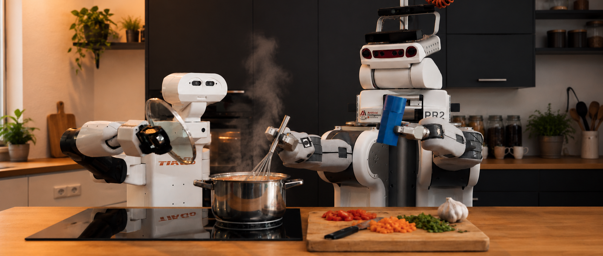
What the description leaves open:
What?· How?· Where?· Under which constraints?· Until when?
Pour the juice.
Spread the butter on my toast.
Mix the ingredients.
Each requires physical contact with an object that will be permanently changed.
A thick sourdough loaf needs a different cutting motion than a cucumber, just as honey pours differently than water[1].
// 1 · the problem — "prepare breakfast"
Easy to state. Hard to execute.
PROBLEM
OAAT
Object-Anchored Action Template
// 1 · why this is hard
Manipulation beyond pick and place
State-changing manipulation changes an object or its contents.
Cutting divides, pouring transfers, and mixing combines materials.
// 1 · why it matters — relevance before difficulty
Action descriptions do not specify what must hold
change approach
wrong orientation
wrong depth
POUR(water) ≠ POUR(honey)
same action — different physical requirements
How can these physical requirements be encoded in the action representation?
// 1 · research question
RESEARCH QUESTION
How can manipulation actions be represented so they work across different objects, tools, robots, and environments?
while satisfying the physical constraints required for execution
new situation
must hold
current scene
Operationalised as seven requirements R1–R7: structural transfer · object-relative grounding · explicit constraints · runtime instantiation · monitored execution · diagnosable failure · implementation usability.
CHAPTER 2
From Observation to Formalisation
Generalising actions from demonstration.
// 2 · segmentation — an annotated cutting episode
Contact events segment the episode
OBSERVATION SOURCE — MPII COOKING 2
The most frequent labels are not state-changing actions but task logistics — take out 1,747 (12.4%), move 1,512 (10.7%). The manipulation cores sit underneath that traffic.
| Primitive family | Retained MPII labels | Episodes | Corpus share | Duration |
|---|---|---|---|---|
| separation | cut apart · slice · cut dice · chop | 1,407 | 10.0% | ~160 min |
| mixing | stir · mix | 327 | 2.3% | ~57 min |
| transfer | pour | 211 | 1.5% | ~17 min |
| surface | wash · clean · dry · spread | 1,101 | 7.8% | ~92 min |
| total retained | 3,046 | 21.6% | ~5.4 h |
Retained only when approach, contact onset, technique and withdrawal were all visible; episodes dominated by transport, search or occlusion were excluded.
// 2 · phase organisation — across all four primitive families
The same skeleton, four different contact stories
// 2 · phase boundaries — one concrete cut, then the vocabulary
When does one manipulation phase end?
An action is divided into phases because different conditions must hold during execution.
A new phase starts when the qualitative relation between tool and object changes.
IMAGE SCHEMAS DESCRIBE THESE RELATIONS
They provide qualitative concepts — CONTACT, CONTAINMENT, SOURCE–PATH–GOAL — that describe what must remain true during a phase.
Contact events are also where human motor control switches regime — the boundaries are not an annotation convention.
| Action | Relation that matters | What must remain true |
|---|---|---|
| cutting | CONTACT / BLOCKAGE | the tool crosses the object |
| mixing | CONTAINMENT | the tool stays inside |
| pouring | SOURCE–PATH–GOAL | material crosses the opening |
| surface motion | CONTACT / SUPPORT | the tool stays on the surface |
// 2 · action techniques — grouped by invariant, not by trajectory shape
One action, different techniques
A technique changes the motion parameters — not the condition that defines success.
technique=circular, arm=right,
anchor=(0.05, 0.79, −0.60))
rendered live — no video
full URDF meshes & textures + recorded giskardpy trajectory — cramera viewer stack
CHAPTER 3
Representing State-Changing Manipulation Through Action Templates
The core representational contribution: the OAAT.
// 3 · system architecture — where the OAAT sits
// 3 · the representation — cutting as the running example
The template stores the reusable structure of an action
The current scene supplies execution-specific parameters.
// 3 · action designators — one structure, three states
Underspecified → partially bound → executable
1 · UNDERSPECIFIED
what to do
2 · PARTIALLY BOUND
some choices provided
3 · EXECUTABLE
all required slots resolved
ST ⊆ dom(Bg)
// 3 · action-relative object geometry — four geometry types
Motion is specified relative to the object, not as a fixed robot trajectory
New object → new anchors, not a new action template.
// 3 · applicability constraints — why they live inside the template
Applicability constraints are checked before the object is changed
Invalid executions are rejected while recovery is still possible.
CHAPTER 5
Grounding and Executing Action Templates
How an OAAT instance is resolved against the current world — in a fixed dependency order — and how its phase invariants are kept valid while the robot moves.
// 5 · grounding pipeline — chapter 5 · watch the slots close
Layered grounding — every failure belongs to a layer → H3 · geometry alone is not enough
Why geometry alone fails (H0,3): for a cherry, geometry offers one wide admissible anchor zone; the knowledge query hasPart(pit) removes the pit axis, leaving two admissible bands. Geometry proposes — knowledge disposes.
// 5 · H3, concretely — knowledge narrows what geometry proposes
Geometry proposes a broad anchor region. Knowledge removes the pit.
Geometry is sufficient wherever the parameter is a spatial consequence of the current instance: where the cut anchor sits on a cucumber, how large the wiping surface is, where the interior clearance-maximising point of a bowl lies.
Symbolic knowledge is necessary wherever the parameter depends on properties not recoverable from geometry: which tool is admissible, which technique family applies, whether a material pours slowly or quickly, which regions are structurally inadmissible because of hidden internal parts.
Geometry does not need to encode material semantics, and the knowledge graph does not need to solve spatial grounding. The OAAT is reusable because each source is responsible only for the part of the parameterisation it can determine reliably.
// 5 · monitored execution — recovery scope follows the active phase
Keeping the bindings valid instead of assuming they stay correct
CHAPTER 6
Experiment and Applications
7,693 seed-controlled executions · 8 platforms · 3 environments · 4 primitive families — plus real-robot cutting and pouring on the PR2.
// 6 · experimental design — intervention, not observation
Cross-platform success rates are uninterpretable unless assignment is controlled
A platform evaluated on smaller bowls or in more accessible environments looks stronger even when its embodiment is not better suited to the action. Do-calculus makes the distinction precise:
P(success | robot = r)
success among runs assigned to platform r
P(success | do(robot = r))
success after setting the platform to r, all else fixed
Shared random seeds fix object pose, object size, support surface and environment layout across platforms, so only robot_name differs within a matched group. Bowl mixing is the primary intervention class because all eight platforms complete a non-trivial fraction of trials — cutting and surface interaction produce floor effects for the most constrained platforms.
| Quantity | Count | Meaning |
|---|---|---|
| robot platforms | 8 | evaluated embodiments |
| environments | 3 | apartment, kitchen, ISR lab |
| primitive families | 4 | with shared seeds |
| core intervention class | 1 | bowl mixing |
| seed-controlled executions | 7,693 | 8 platforms × shared seeds across 3 environments and 4 families |
| core mixing executions | 1,915 | matched runs for the primary causal estimate, seeds 910,001–910,005 |
Success is evaluated at two levels: applicability constraints before dispatch, success criteria at phase boundaries. Physical material effects — connectivity change, homogeneity increase, mass transfer — are excluded from the simulated aggregates and evaluated separately on the real robot.
// 6 · platforms — eight morphologically diverse robots
The same template, no platform-specific adaptation
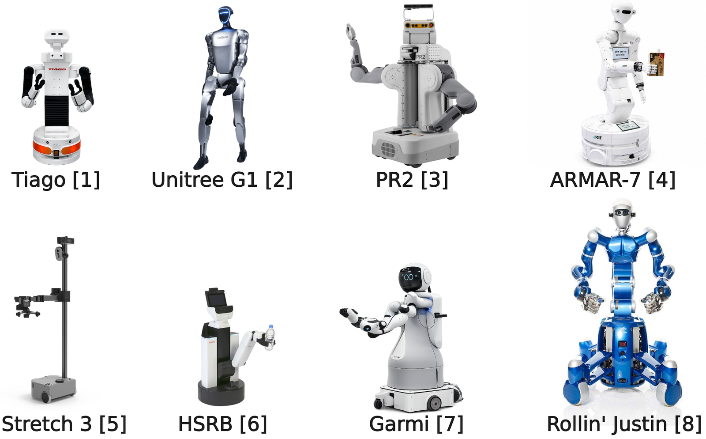
| Robot | Base | Arms / EE | Arm DoF |
|---|---|---|---|
| ARMAR-7 | omni | 2× hands | 8×2 |
| Rollin' Justin | omni | 2× hands | 7×2 |
| PR2 | omni | 2× gripper | 7×2 |
| TIAGo | diff. | 2× gripper | 7×2 |
| HSRB | omni | 1× gripper | 5 |
| Unitree G1 | bipedal/omni | 2× hands | 7×2 |
| Stretch 3 | diff. | 1× gripper | 6 ctrl / 8 kin |
| Garmi | omni | 2× hands | 7×2 |
Every platform is integrated into the Semantic Digital Twin, which provides the shared representation of kinematics, geometry and sensing that the grounding pipeline consumes. Stretch 3 and HSRB are the most constrained: a single gripper plus limited arm or wrist mobility.
// 6 · environments — robot-centred labs and a human living space
Three scene contexts, shared seeds within each column
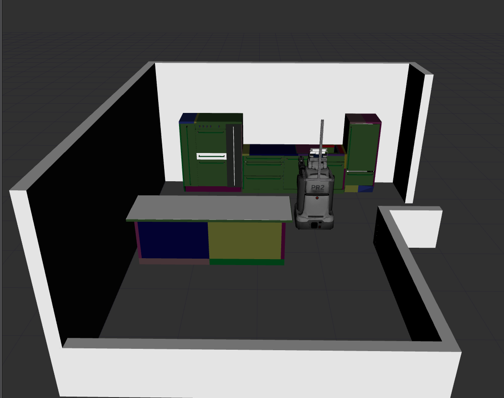
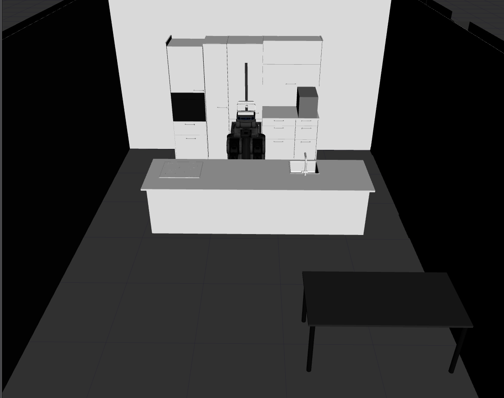
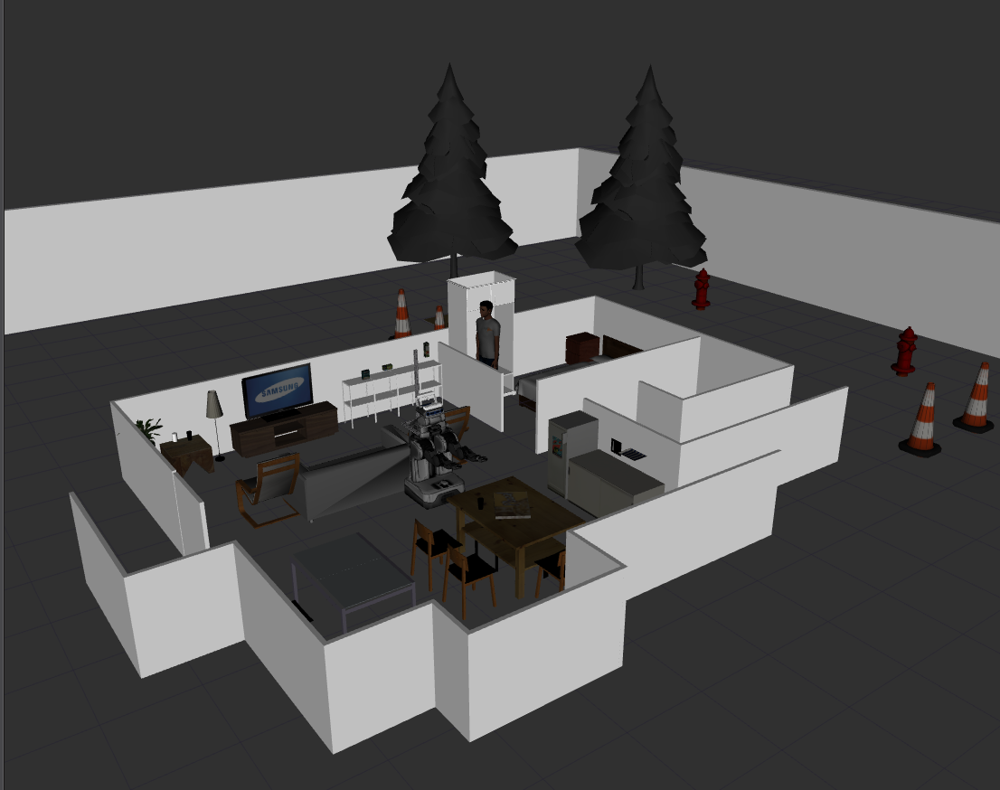
Because seeds are shared within each environment column, differences within a column reflect genuine geometric variation rather than task assignment.
// 6 · main result — matched bowl mixing, n = 1,915
Platform embodiment drives a 72.5% spread under identical task conditions
SUCCESS RATE BY PLATFORM
MEDIAN EXECUTION TIME
Execution time and success rate are not correlated: HSRB is the fastest platform at 4.2 s while sitting mid-tier at 78.9%; ARMAR-7 is the slowest at 22.6 s while reaching only 44.6%.
ARMAR-7's low rate is not a capability deficit — with 8 DoF per arm and omnidirectional mobility it outperforms several platforms elsewhere. The mixing trajectory needs continuous circular wrist motion at bowl-rim height, where its wrist has limited rotational freedom; and because it adjusts height by bending at the waist rather than translating a torso, the reachable envelope shifts in ways the planner struggles to resolve. The representation generated correct parameters in every case; what the solver could not guarantee is a kinematically feasible path.
// 6 · robot × environment — seed-controlled, 8 × 3
Reading across a row: how much the platform degrades. Down a column: sensitivity to scene geometry.
- TIAGo stays above 95% in all three environments.
- Stretch reverses between apartment (10%) and kitchen (47%) — the kitchen's higher tables place the bowl inside its narrow reachable height band.
- ARMAR-7 falls to 33% in the VisLab while TIAGo and Unitree G1 stay above 85%.
- Rollin' Justin drops from 96.7% in the apartment to 69.1% in the kitchen — a 27.6% swing driven entirely by navigation feasibility, not manipulation capability.
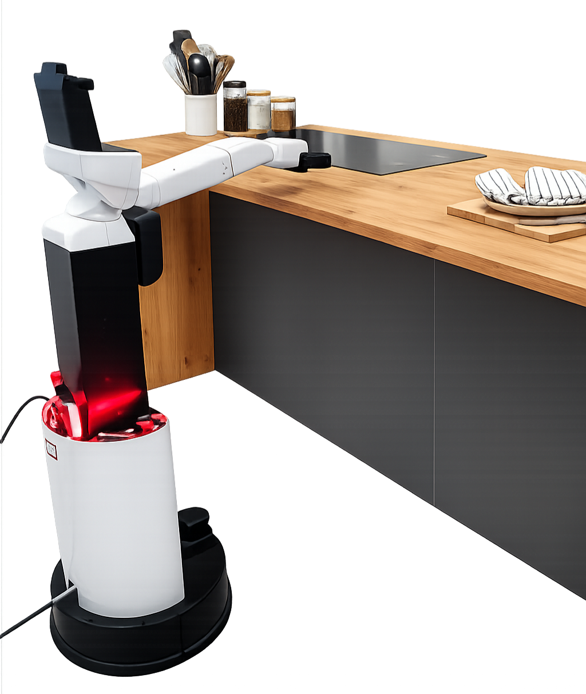
// 6 · failure modes — per platform, seed-controlled mixing
No failure originates in the OAAT phase structure
- Stretch — 180 of 182 failures (98.9%) are motion stagnation, in all three environments alike. It does not selectively fail in cluttered scenes, which points to a structural mismatch between its arm configuration and the mixing primitive rather than an obstacle-avoidance problem.
- Rollin' Justin — 34 of 43 failures (79.1%) are hard controller failures concentrated in the kitchen, where its large footprint leaves fewer valid base poses.
- ARMAR-7 — 123 stalls and 11 hard failures, both from the joint-limit constraints at bowl-rim height.
- HSRB — cutting failures trace to progressive arm extension instability over the full cutting stroke, not to reach alone.
In all cases the failure localises to the execution layer. The OAAT phase structure remained unchanged across all 1,915 runs. R1, R6
// 6 · cross-family generalisation — platform × primitive family
Failure is trajectory-specific, not template-specific
Mean over all three environments, seed-controlled. All four family templates were instantiated across all eight platforms and all three environments; no template was rewritten between platforms or families.
- Stretch and HSRB both exceed 90% on pouring — their cutting and mixing failures are therefore not a grounding or parameter-derivation problem. The same representation executes reliably when the trajectory falls inside their kinematic envelope.
- Garmi has the strongest arms of all eight (two Franka arms) yet lands mid-tier: a large base footprint and above-average gripper size drive navigation and collision failures. The arms are rarely the bottleneck; the surrounding geometry is.
- Rollin' Justin struggles on vertical surface targets — reaching a self-collision-free configuration while maintaining contact is a geometric, not kinematic, problem.
- Unitree G1 vs ARMAR-7: both bend at the waist to set working height, but G1's wrist design gives more rotational freedom exactly at the bowl-rim configurations that cost ARMAR-7 its recovery attempts.
Overall success and MTBF per family: failure rate follows trajectory demand, not template complexity.
// 6 · real-robot execution — PR2, Bremen Apartment laboratory
Same action code, now with contact forces and material behaviour
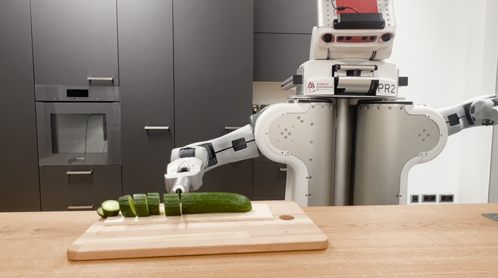
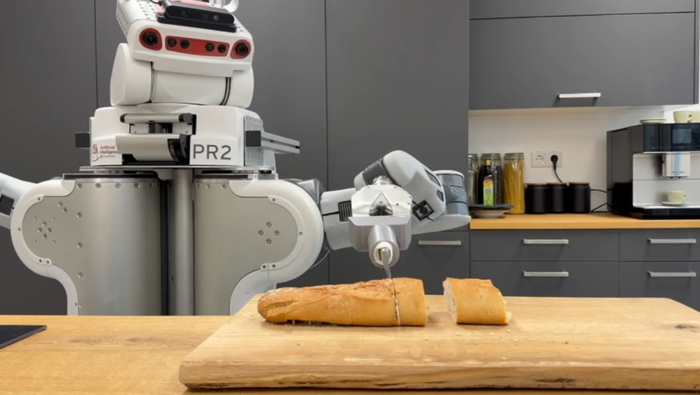
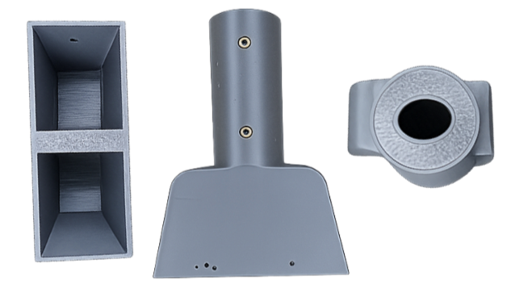
Cutting succeeded on bread, cucumber and zucchini with the technique selected automatically from material properties. The remaining differences are material-dependent: watery cucumber slices adhere to the blade and need a wiping-off motion between cuts; zucchini needs stable force transmission because of its density; bread needs repeated sawing through a compliant structure. These localise the additional difficulty to embodiment, tooling and material interaction — not to the OAAT grounding. R7
// 6 · real-world pouring — 120 trials, target perceived anew every trial
94.2% success — and the seven failures name a missing predicate, not a broken structure
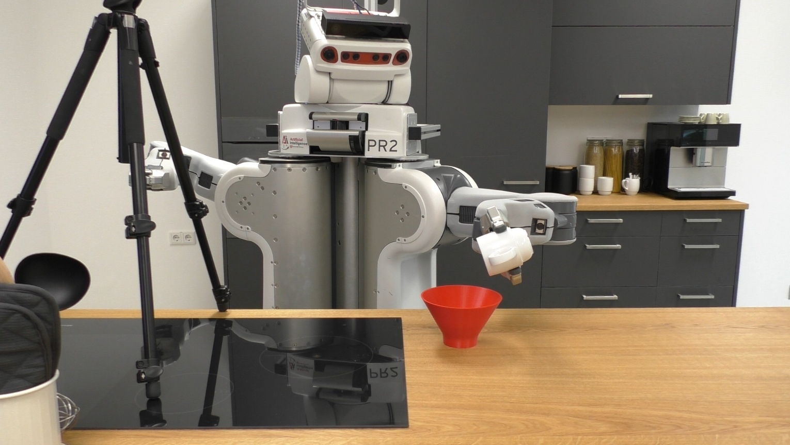
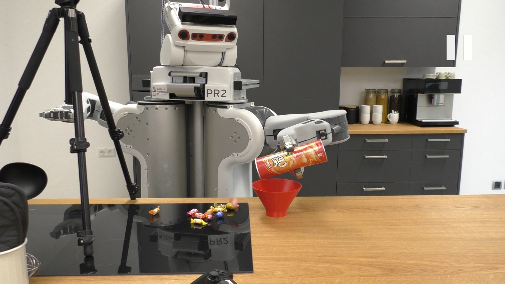
| Source container | Trials | Success |
|---|---|---|
| small — ceramic mug | 40/40 | 100% |
| medium — 3D-printed cup | 40/40 | 100% |
| large — Pringles can | 33/40 | 82.5% |
| overall | 113/120 | 94.2% |
The OAAT grounding succeeded in all 120 trials: opening geometry derived from the perceived source object, tilt axis and admissible tilt range computed from the bounding box, target alignment resolved from the perceived bowl pose. No ground-truth pose was provided.
The large-container failures are not a grounding error. The elongated aspect ratio and confined cross-section accelerate the wrapped candies along the tube axis before they clear the opening, producing ballistic ejection outside the target region.
What is missing is an additional predicate distinguishing compact from elongated granular containers — not a different phase structure and not a different geometric grounding procedure. R2
100% across the 80 small- and medium-container trials confirms that the material-transfer primitive instantiates from perceived geometry without container-specific tuning, and that target alignment from online perception suffices for reliable transfer in those cases.
// 6 · open source — reproducibility of the representation, separately from the hardware
The evaluation is inspectable, not just reported
RoboCup@Home added a class of constraint laboratory evaluation does not surface: walls, furniture and object placement are reconfigured across competition runs. Video recordings of OAAT-driven executions there show the same phase organisation as the controlled evaluation — approach–technique–retract preserved, constraint violations triggering local re-binding rather than full task restarts. No quantitative failure analysis is available for the competition runs.
// 6 · failure analysis — read the statistics carefully
The recovery paradox
A naive reading: "recovery reduces success." Wrong — recovery fires after a collision failure, so the recovery group is pre-selected for the hardest contexts. A high recovery rate signals resilience, not brittleness.
Failure modes localise to embodiment, never to the template:
- Stretch: 180 of 182 failures (98.9%) are motion stalls in all three environments → structural arm–primitive mismatch, not obstacle avoidance.
- Rollin' Justin: 34 of 43 failures (79.1%) hard controller failures, concentrated in the kitchen.
- ARMAR-7: 123 stalls + 11 hard failures at joint limits; its recovery motion succeeds in only 10.2% of attempts.
- Across all 1,915 runs: no failure originates in the OAAT phase structure itself.
CHAPTER 7
Discussion and Insights
What the results mean, what the OAAT generalises over, and where the limits of the current work actually lie.
// 7 · reflection on hypotheses — what the evidence supports
Three hypotheses, three kinds of evidence
The approach–technique–retract organisation held across 7,693 executions, 8 platforms, 3 environments and 4 families, and was visible in the human demonstrations before any template was assumed. No structural change was required.
Evidence: observation study (Ch. 3) + representational stability (Ch. 6).
Parameterisation produced valid executions, and every failure was categorisable by layer. Failures came from the system — perception, kinematics, controller — not from the representation.
Evidence: OAAT phases (Ch. 4–5), constraint satisfaction, failure categorisation.
Material-specific parameters were retrieved at runtime; the knowledge graph narrowed geometrically admissible anchor regions to semantically admissible ones. The geometry-only baseline could not produce those bindings at all.
Evidence: knowledge constraints, pouring failure analysis, H0,3 test.
Independent theoretical support — the four primitive families correspond formally to the predicates of Hedblom's ISLFOL: each generator enforces, as a continuous trajectory invariant, what the corresponding image schema defines qualitatively. The empirically derived structure coincides with a cognitively grounded formal prediction.
// 7 · the generalisation boundary — representational invariance, not universal realisability
What generalises is the action organisation — not one trajectory
REUSABLE STRUCTURE — FIXED BY THE TEMPLATE
- the phase order
- the primitive family attached to each phase
- the invariants that define admissible execution
These are shared across instances of an action class and correspond to the common execution skeleton in the implementation.
PARAMETERISATION — SUPPLIED BY THE CONTEXT
- anchors, normals, penetration depths, surface extents
- tilt profiles, durations, repetition counts
- object-specific symbolic bindings: tool, technique
The template is reusable because it fixes what kind of motion organisation is required; parameterisation stays open because it determines how that organisation is instantiated here.
What the OAAT does not generalise over — arbitrary objects, arbitrary materials, or arbitrary infrastructure quality. If the geometry cannot be represented well enough to derive a valid action-relative object geometry, if the world model is inconsistent, if the controller cannot realise the constraints, or if the knowledge graph does not cover the material, the action may fail even though the phase structure remains valid. The claim is representational invariance, not universal realisability.
// 7 · threats to validity — stated, not hidden
Where these results could be wrong
| Threat | What it means for the claim |
|---|---|
| Observation selection bias | The families were extracted from a bounded set of demonstrations; they still depend on how segmentation boundaries were chosen and which variants were treated as central. Borderline cases — ladle-mediated transfer, composite surface cleaning — are the pressure points. The claim is a stable core sufficient for these families, not an exhaustive account of human manipulation. |
| Bounded evaluation space | Eight platforms and three environments give meaningful variation but do not span domestic manipulation. The results support structural invariance across the tested embodiments and scenes. |
| Bounding boxes as shape proxies | Adequate for regular objects; a real risk for irregular, articulated or internally structured ones. Where the box over-approximates the admissible region, the derived anchor or depth can be geometrically coherent yet physically poor. Some failures are attributable to the geometric abstraction rather than the OAAT. |
| Curated knowledge graph | Coverage is necessarily incomplete and reflects the knowledge-engineering scope. Missing entities, relations or default fallbacks all affect execution quality — a claim about contextual parameterisation can be weakened by an incomplete resource rather than by a flawed representation. |
| Simulation vs reality | Collision geometry, poses and contact conditions are cleaner in simulation. The PR2 trials expose the same pipeline to perception noise and real contact, but cover one platform and a subset of families. |
| Scope of the phase form | All four families share the approach–technique–retract form. Actions requiring interleaved sensing and motion, or conditional phase ordering, are supported by the plan structure but not evaluated experimentally. |
CHAPTER 8
Conclusion and Future Work
State-changing household manipulation does not have to be represented either as a symbolic action name or as a fixed trajectory.
// 8 · summary of contributions — the numbers behind the claim
What was shown
executions
environments × families
under identical conditions
120 PR2 trials
phase structure itself
Full four-family corpus: overall success and mean time between execution failures. The ordering follows trajectory demand.
- The same template executed across 8 platforms, 3 environments and 4 families without modification. R1
- Open parameters bound at runtime from geometry, perceived scene state and the knowledge graph — not from constants. R2
- Applicability, invariants and success criteria checked explicitly at each boundary and during execution. R3, R5
- Underdetermined designators resolved through the fixed dependency order. R4
- Every failure localisable to a layer, never to the phase structure. R6
- The implementation maps directly onto PyCRAM designators, KnowRob queries, SDT geometry interfaces and Giskard constraints — no per-instance rewriting. R7
// 8 · the argument, end to end — hypothesis → evidence → result
How the chapters compose into one argument
// 8 · future research directions — what the structure makes tractable next
Where this goes
Six of these directions are already under investigation in supervised theses: plan transformation, open-world navigation, action recognition, language-driven slot resolution, scoring-based pick-and-place, and multi-robot task planning.
// 8 · proposed solution — how we approach the problem
Separate the stable action structure from its runtime bindings
The template stays the same. Only the bindings change.
The stable part is the phase sequence with its constraints. The variable part — object slots, scene bindings, material-dependent parameters — is grounded at runtime. A new object requires new geometric anchor points, not a new template.
declared slots + grounding function
constraints before and during contact
action-relative geometry
Each column answers one difficulty from frame 04; the rest of the talk supplies the evidence that the answer holds.
// 8 · contributions — the claims, up front
Four claims this talk will substantiate
Each claim returns at the end with its evidence — the recorded executions in between are the demonstration.
// 8 · real-world execution — same action code, physical PR2
From simulation to the physical kitchen
| pouring · source container | trials | success |
|---|---|---|
| ceramic mug (small) | 40/40 | 100% |
| 3D-printed cup (medium) | 40/40 | 100% |
| Pringles can (large, elongated) | 33/40 | 82.5% |
| overall | 113/120 | 94.2% |
- Cutting succeeded on bread, cucumber, zucchini — technique selected automatically from material properties (sawing through crust; wipe-off between adhesive cucumber slices).
- All 7 pouring failures: ballistic ejection from the elongated can. The fix is one missing knowledge predicate (compact vs elongated granular container) — not a different phase structure.
// 8 · future work & closing
- Action-relative geometry for irregular objects (part-based, convex decomposition)
- Task-level recovery: new tool, move the object, ask for help
- Learned material models to extend knowledge coverage; transients in meal preparation
- Bimanual manipulation; new image schemas (Blockage, Caused-Movement, Link)
- The OAAT as the missing middle layer foundation models can build on — not a competitor
"The central challenge is not to make motion smoother or training data larger, but to represent action in a way that preserves the physical invariants of the world."
Thank you. — questions welcome
Not part of the talk
// archive — the designator in the implementation
The same three states, as PyCRAM designators
1 · UNDERSPECIFIED
:action divide
:roles
(object ...)
(tool ...)
(arm ...)
:slots
(technique ...)
(num-cuts ...)
(anchor ...)
(normal ...)
(support ...)
(depth ...))
Ellipsis is not a value to execute — it is a request to resolve the slot before the next execution step becomes effective.
2 · PARTIALLY SPECIFIED BY THE CALLER
:action divide
:roles
(object cucumber)
(tool ...)
(arm ...)
:slots
(policy-type equal-parts)
(technique ...)
(anchor ...)
(normal ...))
The same designator structure covers "cut this bread with the right arm", "slice this cucumber into equal parts" and "choose a knife and support automatically". Only the set of open slots changes.
3 · GROUNDED — COMPILES TO MOTION
:action divide
:roles
(object cucumber-1)
(tool knife-2)
(arm right)
:slots
(technique saw)
(num-cuts 4)
(anchor p*)
(normal n)
(support board-1)
(depth d))
Executable when every slot the template requires has a binding: ST ⊆ dom(Bg).
// archive — action-relative object geometry, formally
What each geometry type constrains
| family | anchor | constraint maintained during the technique phase |
|---|---|---|
| cutting | p* = (p₀, n) | monotonic penetration along n · tangential motion q(t)·n = 0 |
| mixing | admissible volume V | motion stays inside V · clearance margin to the wall |
| pouring | opening boundary ∂O, tilt axis | material crosses ∂O · tilt profile from material |
| surface | contact surface + coverage region | contact maintained · motion in the tangent plane |
The same generator applies to any object for which an action-relative object geometry can be derived — which is why the same action executes on objects never seen before.
// archive · motion primitives — Definition 4.6
One generator per invariant, not one per verb
πk(t) = gk(p*, θ, t), t ∈ T
The anchor p* is the geometric site on or in the object; θ collects amplitudes, depths, frequencies, durations, clearance margins; T is the phase interval. The generator does not describe one stored trajectory — it describes the family of admissible trajectories that keep the invariant fixed.
| Generator | Equation | Techniques it covers — differing only in θ |
|---|---|---|
| separation | gsep = p₀ − d(t)·n + q(t), q(t)·n = 0 | sawing, slicing, julienne, halving — cut count, spacing, tangential excitation |
| mixing | gmix ∈ V(object), clearance ≥ margin | circular, elliptical, orbital — path geometry and scale |
| transfer | gtra: material crosses ∂O under tilt(t) | tilting, tapping, shaking — temporal profile of discharge |
| surface | gsurf = p* + qshear(τ) | wiping and spreading — coverage strategy and material-flow direction |
Defining a generator per named variant does not scale: slice, dice, chop, mince, halve, quarter grow with the task vocabulary. An early implementation with one generator per named variant required modifying generator code in several places for each new food class. Keeping the invariant fixed and varying the object-derived anchor removes that cost. The claim is bounded: not all manipulation verbs reduce to four families — these four state-changing families do.
// archive · four primitive families — one invariant each
Each family is defined by a physical invariant
No claim that all manipulation verbs reduce to four families — this is the evaluated scope. The structure extended cleanly to bottle-opening in supervised follow-up work.
// archive · the representation — chapter 4
Object-Anchored Action Template (OAAT) → H1/H2 · structure, encoded as constraints
Cut(object = cucumber_1,
tool = …, # entity slot
technique = …, # task-choice slot
arm = …,
anchor, normal, depth = …) # geometric slots
# OAAT instance
OA = (TA, GA, kA, SA, CA)
TA = ⟨Φ₁ … Φₙ⟩ phases · GA geometry type · kA family ·
SA open slots · CA = applicability ∧ motion bounds
# grounding & executability
Bg = γ(D, WSDT, KKG) # designator · world model · knowledge
executable(OA, Bg) ⇔ SA ⊆ dom(Bg) ∧ Capp(Bg)
— admissibility decided before irreversible contact
- Phases Φᵢ = (family, anchor, params, interval, pre, post, success) — each phase's postcondition feeds the next's precondition; the success criterion measures the material effect, not motion completion.
- Action-relative geometry — the template expects a type of geometry (separating surface, bounded interior, opening, contact surface); bread and cucumber differ in values, not in type.
- Applicability constraints checked before irreversible contact: cuttable ← compliance > cmin ∧ hasSeparatingSurface · pourable ← flowable(contents) ∧ hasOpening · mixable · wipeable / spreadable.
- Every failure is attributable: an unbound slot, a violated applicability constraint, or a violated phase invariant — exactly the taxonomy the grounding pipeline and the runtime monitor implement.
// archive · the grounding pipeline — order is part of the representation
Three knowledge sources, one fixed resolution order
// archive · worked trace — "cut the cucumber on the counter"
Every failure belongs to the layer where the information is meaningful
| Stage | Source | Example binding | Failure reported |
|---|---|---|---|
| input designator | task request | family: separation and division · object: cucumber on counter | no OAAT instance |
| object binding | Semantic Digital Twin, perception | object: cucumber-1 · pose: TO · support: board | object not found |
| applicability | KnowRob | cuttable: true | inapplicable object |
| symbolic binding | KnowRob | tool: knife · technique: saw · cuts: 4 | missing symbolic binding |
| scene binding | Semantic Digital Twin | arm: right · support: board · pose: TO | no reachable arm / missing support |
| geometric binding | object geometry in the SDT | anchor p* · normal n · depth d · withdraw w | missing geometric anchor |
| instantiation | motion generator, Giskard | approach, saw stroke, retract | controller infeasible |
The two highlighted rows are exactly what the geometry-only null model H0,3 omits. A geometry-only model could still compute a surface and an anchor; it could not reject an unsuitable material, exclude a semantically protected part, or select the technique and task parameters that make the grounded instance admissible. These are not improvements over geometry — they are bindings geometry cannot supply at all.
// archive · recovery bias — why the naive reading inverts the ordering
A high recovery rate is a sign of resilience, not brittleness
A naive reading concludes that activating recovery reduces success from 80.8% to 15.6%. This is wrong. Recovery fires only after a collision failure, so the recovery = true group is pre-selected for the hardest execution contexts — precisely those where primary success was already unavailable. The 15.6% figure does not estimate P(success | do(recovery = true)); it estimates the success rate among runs that were already failing.